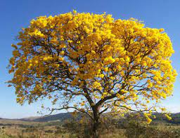
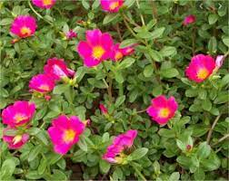

Primavera
Uma das características mais marcantes do gênero é a presença de brácteas, isto é, folhas modificadas de cores chamativas que visam à atração de polinizadores.
Originária do Brasil
Pau-Brasil
A maior utilidade econômica dessa árvore dava-se porque a resina presente na sua madeira possibilitava a fabricação de um corante usado para tingir tecidos.
Originário do BrasilAlamanda
Ela é conhecida cientificamente como Allamanda cathartica e pertence à família Apocynaceae. Esta planta cresce em forma de arbusto e pode atingir até 3 metros de altura.
Originária da América do SulFlor de Maio
A flor-de-maio cujo nome científico é Schlumbergera truncata pertence à família dos cactos, mas não possui espinhos.
Originária da Mata Atlântica Brasileira

Ipê
A árvore do ipê é alta, bem copada e, no período da floração, apresenta uma peculiaridade: fica totalmente desprovida de folhas
Originário do BrasilCaliandra
cresce em arbustos lenhosos de até 4 metros. Suas flores aparecem na primavera e no verão e suas folhas são perenes.
Originária do Cerrado Brasileiro
Lírio
A flor lírio é uma das plantas mais queridas pelo mundo. Com forte apelo ornamental, uma aura de simbolismo também costuma cercar esta flor.
Originário da Ásia, Europa e América do Norte
Helicônia
O nome Helicônia é uma homenagem à montanha Helicon, localizada no sul da Grécia, onde reza a lenda que viviam as musas inspiradoras das artes.
Originária principalmente da Indonésia
Petúnia
Seu principal pigmento é uma antocianida denominada petunidina, que tem seu nome derivado da palavra Petúnia, sendo um corante presente em algumas outras flores e frutas.
Origináriada América do Sul
Orquidea
Reverenciada por sua beleza, a orquídea tem formato e combinação de cores específicas para cada espécie. Ela é comum nas matas e florestas.
Originária do Japão e China
Bromélia
Essa espécie brasileira tem grande resistência e capacidade de sobrevivência, além de apresentar uma grande variedade de formas, tamanhos e cores.
Originária do Brasil
Begonia
A begônia é uma flor delicada nas suas tonalidades de vermelho, branco ou rosa. Se você observar com atenção, inclusive, perceberá que suas folhas sugerem o desenho de um coração.
Originária da América Tropical
Jacarandá
O tamanho de uma jacarandá varia entre arbusto e árvore de grande porte, como é o caso daquelas que atingem até 30 metros de altura. A madeira dessa espécie foi bastante explorada.
Originária da Bolivia, Brasil e Argentina
Camélia
A camélia enfeita divinamente tanto jardins tradicionais quanto jardins de inverno. Conforme a variedade, a flor pode ser branca, vermelha ou rosada.
Originária da Europa
